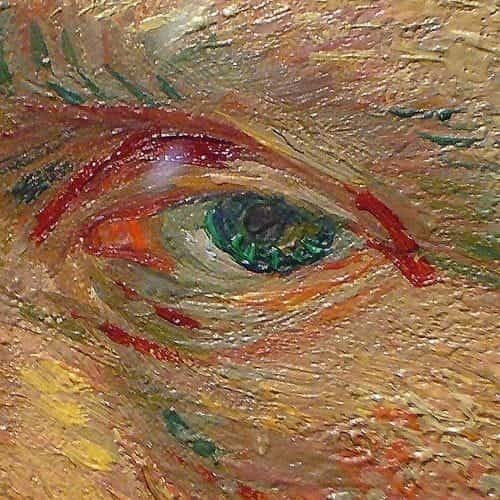

Tuna Kıran
professional web experiences
Hi! i am Tuna
i am a web designer based on İstanbul,Turkey
scroll to explore

creativeness
i always strive to code memorable and unique experiences that are aesthetically appealing, functional and distinctive.
desire
i work on my projects with passion and enthusiasm

individuality
every project i start and finish is different from each other.